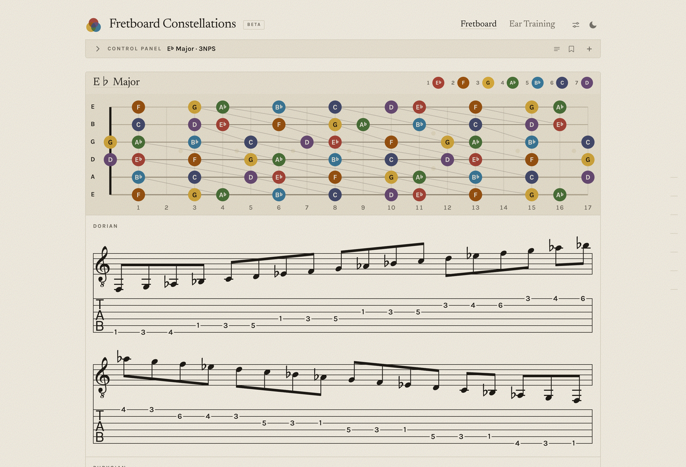

012025 – present · deployed
Fretboard Constellations
For a teacher, mid-lesson
- What
- An interactive theory instrument for guitar. Scales, chords and harmony render as colour-coded, playable shapes across the neck, with notation and TAB.
- Decision
- Design for an expert teaching live on a shared screen — a calm Lesson Mode, a full Studio Mode, and nothing locked behind skill level.
- Role
- Product design & build
- Stack
- TypeScript · React · Web Audio
